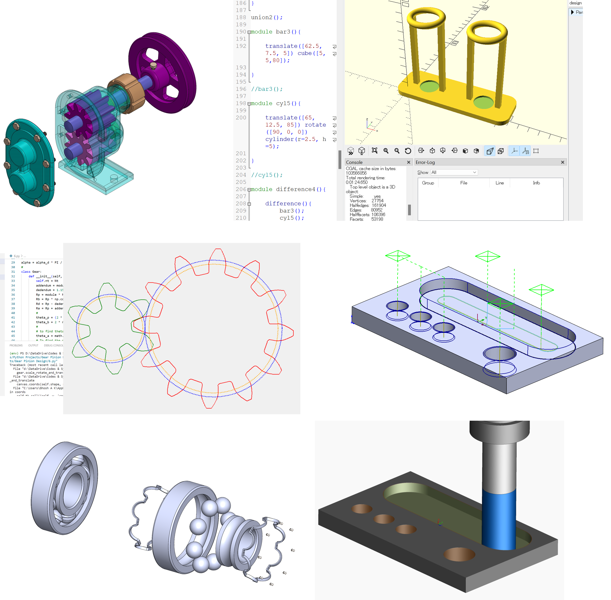

@ Kitami Institute of Technology,
I teach Computer-Aided Design (CAD) and Computer-Aided Manufacturing (CAM), tailor-made for undergraduate students.
As an instructor in this dynamic field, my philosophy is to equip students with the essential knowledge and practical skills to excel in CAD/CAM—through hands-on projects and interactive learning. I believe the most crucial aspect for a CAD/CAM professional is unleashing creativity and mastering the art of transforming imaginative designs into tangible realities.
Apart from creating lecture contents, I prepare online tutorials (Visit YouTube Channel) so that students can follow along and learn anywhere, anytime!
Additionally, I strive to teach Digital Transformation (DX) in Manufacturing across several courses, providing insights into Manufacturing DX through experiments and hands-on practice sessions.
